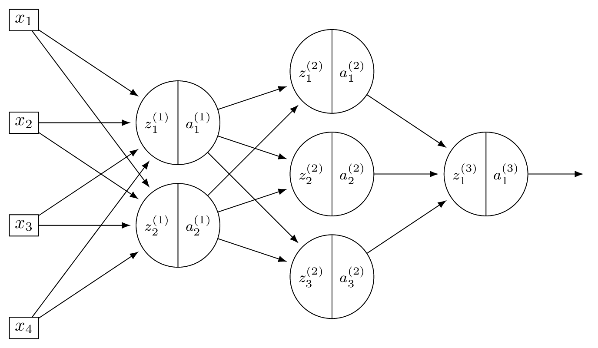
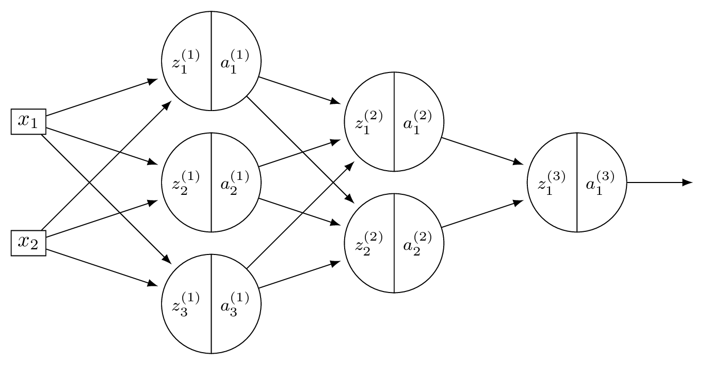
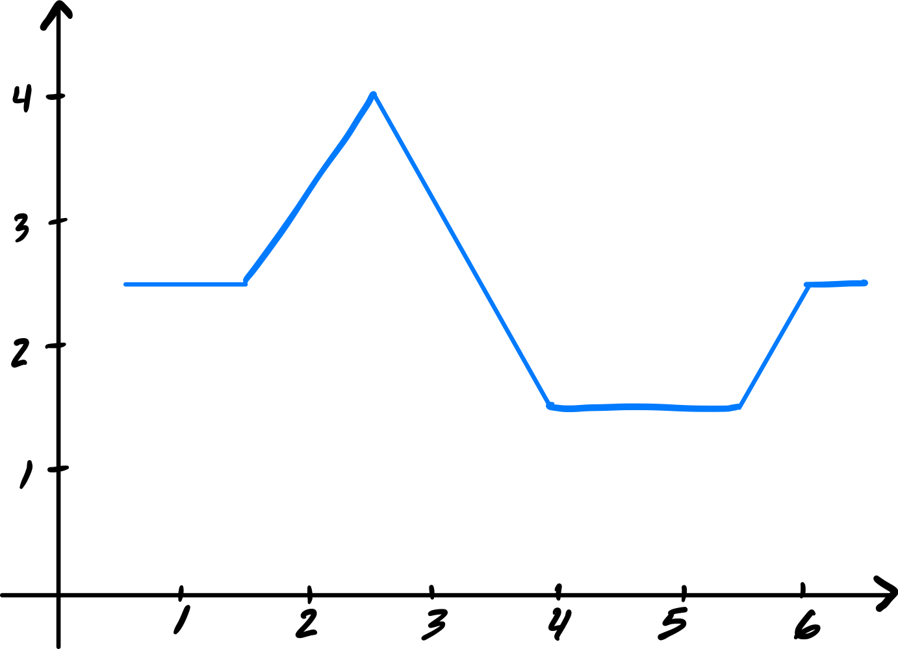
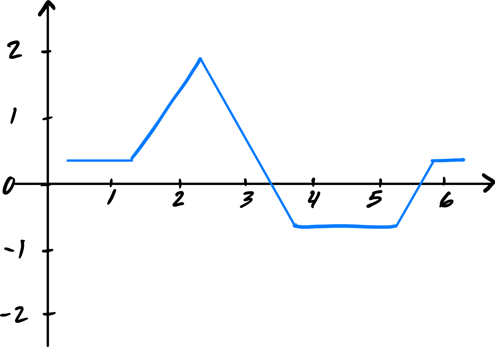

Problems tagged with "lecture-11"
Problem #125
Tags: lecture-11, forward pass, quiz-06, neural networks
Consider a neural network \(H(\vec x)\) shown below:

Let the weights of the network be:
Assume that all nodes use linear activation functions, and that all biases are zero.
Suppose \(\vec x = (2, 0, -2)^T\).
Part 1)
What is \(a_1^{(1)}\)?
Solution
With linear activations, \(a = z\) at every node.
\(z_1^{(1)} = 3(2) + (-1)(0) + (-1)(-2) = 8\), so \(a_1^{(1)} = 8\).
Part 2)
What is \(a_2^{(2)}\)?
Solution
Layer 1: \(\vec a^{(1)} = (8, -4)^T\). Layer 2: \(z_2^{(2)} = 1(8) + 2(-4) = 0\), so \(a_2^{(2)} = 0\).
Part 3)
What is \(H(\vec x)\)?
Solution
Layer 2: \(\vec a^{(2)} = (36, 0)^T\). \(H(\vec x) = 2(36) + (-3)(0) = 72\).
Problem #126
Tags: neural networks, quiz-06, activation functions, forward pass, lecture-11
Consider a neural network \(H(\vec x)\) shown below:

Let the weights of the network be:
Assume that all hidden nodes use ReLU activation functions, that the output node uses a linear activation, and that all biases are zero.
Suppose \(\vec x = (2, 0, -2)^T\).
Part 1)
What is \(a_1^{(1)}\)?
Solution
\(z_1^{(1)} = 3(2) + (-1)(0) + (-1)(-2) = 8\), so \(a_1^{(1)} = \text{ReLU}(8) = 8\).
Part 2)
What is \(a_2^{(2)}\)?
Solution
\(z_2^{(1)} = 2(2) + 2(0) + 4(-2) = -4\), so \(a_2^{(1)} = \text{ReLU}(-4) = 0\). Now \(\vec a^{(1)} = (8, 0)^T\). Layer 2: \(z_2^{(2)} = 1(8) + 2(0) = 8\), so \(a_2^{(2)} = \text{ReLU}(8) = 8\).
Part 3)
What is \(H(\vec x)\)?
Solution
\(z_1^{(2)} = 5(8) + 1(0) = 40\), \(a_1^{(2)} = 40\). So \(\vec a^{(2)} = (40, 8)^T\). \(H(\vec x) = 2(40) + (-3)(8) = 56\).
Problem #127
Tags: lecture-11, quiz-06, neural networks, feature maps
Consider a neural network \(H(\vec x)\) shown below:

The first layer of this neural network can be thought of as a function \(f: \mathbb R^d \to\mathbb R^k\) mapping feature vectors to a new representation. What are \(d\) and \(k\) in this case?
Solution
\(d = 4\) and \(k = 2\).
The first layer takes the 4-dimensional input and maps it to a 2-dimensional representation (the number of nodes in the first hidden layer).
Problem #128
Tags: lecture-11, quiz-06, neural networks, feature maps
Consider a neural network \(H(\vec x)\) shown below:

The first layer of this neural network can be thought of as a function \(f: \mathbb R^d \to\mathbb R^k\) mapping feature vectors to a new representation. What is this new representation if
and \(\vec x = (3, -1)^T\)?
Solution
The new representation is \(\vec z^{(1)}\), where \(z_j^{(1)} = \sum_i W_{ij}^{(1)} x_i\). Computing:
So the new representation is \((11, 7, -1)^T\).
Problem #131
Tags: activation functions, lecture-11, quiz-06, neural networks
In the following, when we say a function \(f(x)\) "looks like a ReLU", we mean that it has a flat part where \(f(x) = 0\), and a linear part with a slope (not necessarily equal to one).
Suppose a deep neural network \(H(x): \mathbb R \to\mathbb R\) uses ReLU activations in all of its hidden layers.
Part 1)
Suppose in addition that the output node uses a linear activation. True or False: when plotted, \(H(x)\) must look like a ReLU.
Solution
False. A deep ReLU network with linear output is a piecewise linear function, but it can have many linear pieces, not just two. For example, a network with many hidden units can produce a function with several "bends" in it, which does not look like a ReLU.
Part 2)
Suppose instead that the output node also uses a sigmoid activation. True or False: when plotted, \(H(x)\) must look like a ReLU.
Solution
False. As in part (a), the hidden layers produce a piecewise linear function, which can have many linear pieces. Composing this with a sigmoid produces a smooth function bounded in \((0, 1)\); not necessarily a simple S-shaped curve, but certainly not a ReLU.
Problem #132
Tags: activation functions, lecture-11, quiz-06, neural networks
Suppose that when a deep neural network \(H(x): \mathbb R \to\mathbb R\) is plotted, the resulting graph looks like the following:

Part 1)
True or False: it is possible that the network uses ReLU activation in its hidden layers, and linear activation in its output layer.
Solution
True. A deep ReLU network with linear output produces a piecewise linear function, which is consistent with the plot.
Part 2)
True or False: it is possible that the network uses ReLU activation in its hidden layers, and ReLU activation in its output layer.
Solution
True. Applying ReLU at the output clips negative values to zero. If the piecewise linear function produced by the hidden layers already has the shape shown (non-negative everywhere it is nonzero), the output ReLU would not change it.
Part 3)
True or False: it is possible that the network uses linear activation in its hidden layers, and ReLU activation in its output layer.
Solution
False. Linear activation in all hidden layers makes the entire network a linear function. Applying ReLU at the output can only produce a function with at most one "cusp," which cannot match the multi-piece shape shown.
Now suppose the plot of \(H(x)\) looked like the below, instead:

Part 4)
True or False: it is possible that the network uses ReLU activation in its hidden layers, and ReLU activation in its output layer.
Solution
False. The shifted plot takes negative values in some region. ReLU at the output would clip those to zero, so the network cannot produce negative outputs. Since the plot shows negative values, this is impossible.
Problem #133
Tags: activation functions, lecture-11, quiz-06, neural networks
Consider two numbers \(z_1 = 10\), \(z_2 = -5\), and the ReLU activation function \(f(z) = \max(0, z)\). What is \(f(z_1) + f(z_2)\)?
Solution
\(f(z_1) + f(z_2) = \max(0, 10) + \max(0, -5) = 10 + 0 = 10\).
Problem #134
Tags: lecture-11, quiz-06, neural networks
Consider a neural network with \(d = 6\) input features, a single hidden layer of \(d' = 4\) nodes, and one output node. There is a bias in both the hidden layer and the output layer.
What is the total number of parameters in this network?
Solution
33.
The hidden layer has \((6 + 1) \times 4 = 28\) parameters. The output layer has \((4 + 1) \times 1 = 5\) parameters. Total: \(28 + 5 = 33\).
Problem #135
Tags: lecture-11, forward pass, quiz-06, neural networks
Consider a neural network with 2 input nodes, 2 hidden nodes, and 1 output node. There is no non-linear activation function used in the network (i.e., all activations are linear). The input is \((x_1, x_2) = (1, 1)\).
The weights and biases are as follows. Hidden layer: \(W^{(1)} = \begin{pmatrix} 1 & 1 \\ 1 & 1 \end{pmatrix}\), \(\vec b^{(1)} = (-1, -1)^T\). Output layer: \(\vec w^{(2)} = (-1, -1)^T\), \(b^{(2)} = -1\).
What is the output of this neural network?
Solution
Hidden node 1: \(\psi_1 = 1(1) + 1(1) - 1 = 1\).
Hidden node 2: \(\psi_2 = 1(1) + 1(1) - 1 = 1\).
Output: \(H = (-1)(1) + (-1)(1) - 1 = -3\).
Problem #136
Tags: activation functions, lecture-11, quiz-06, neural networks
The sigmoid function is \(f(x) = \dfrac{1}{1 + e^{-x}}\).
Use the chain rule to find \(f'(x)\), and evaluate \(f'(0)\).
Solution
Using the chain rule:
At \(x = 0\): \(f(0) = \frac{1}{1 + 1} = 0.5\), so \(f'(0) = 0.5 \cdot 0.5 = 0.25\).
Problem #137
Tags: activation functions, lecture-11, quiz-06, neural networks
Which of the following is generally true about linear activation functions in neural networks?
Solution
Linear activation results in linear prediction functions, regardless of the number of hidden layers or units.
If all activation functions are linear, then each layer computes a linear transformation of its input. The composition of linear transformations is itself a linear transformation, so the entire network collapses to a single linear model.
Problem #138
Tags: activation functions, lecture-11, quiz-06, neural networks
The sigmoid activation function is given as \(g(z) = \dfrac{1}{1 + e^{-z}}\).
Consider two points \(z_1 > 0\) and \(z_2 < 0\). Which of the following always holds true?
Solution
\(g(z_1) > g(z_2)\).
When \(z > 0\), \(g(z) > 0.5\); when \(z < 0\), \(g(z) < 0.5\). Therefore \(g(z_1) > 0.5 > g(z_2)\) always holds.
Problem #139
Tags: activation functions, lecture-11, quiz-06, neural networks
For the sigmoid activation function \(g(z) = \dfrac{1}{1 + e^{-z}}\), what is \(g(z) + g(-z)\) for any \(z \in\mathbb{R}\)?
Solution
\(g(z) + g(-z) = 1\).
Problem #140
Tags: activation functions, lecture-11, quiz-06, neural networks
The Leaky ReLU activation function is defined as \(g(z) = \max\{\alpha z, z\}\), where \(0 \leq\alpha < 1\).
What is \(g(-5)\) when \(\alpha = 0.01\)?
Solution
\(g(-5) = \max\{0.01 \cdot(-5),\; -5\} = \max\{-0.05,\; -5\} = -0.05\).
Problem #141
Tags: activation functions, lecture-11, quiz-06, neural networks
Suppose you are modeling the percentage change in stock prices each day as a regression problem by training a neural network. On some days the percentage change is positive; on others it is negative.
True or False: ReLU activation can be used in the output layer of the neural network for this task.
Solution
False.
ReLU activation in the output layer truncates all negative values to zero, so the network could never predict a negative percentage change.